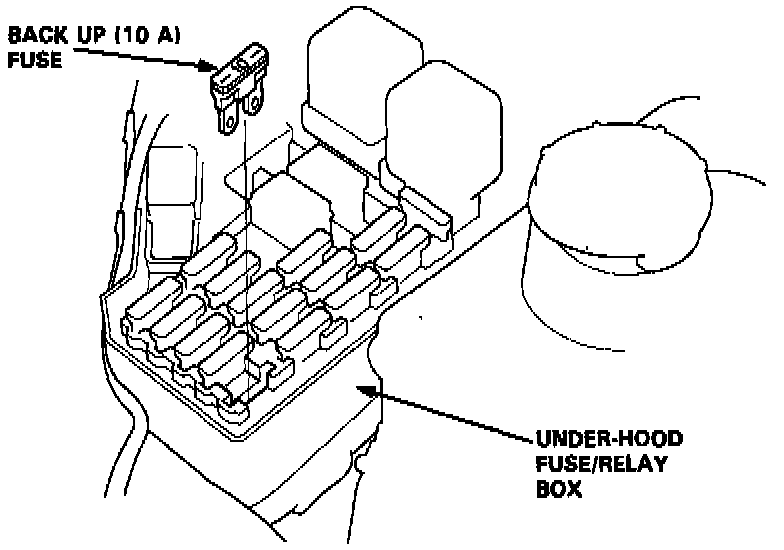

Without Scan Tool
Reset Procedure
1. Turn the ignition switch off.
2. Remove the BACK UP (10 A) fuse from the under-hood fuse/relay box for 10 seconds to reset the engine control module.
NOTE: Disconnecting the BACK UP fuse also cancels the radio preset stations and the clock setting. Make note of the radio presets before removing the fuse so you can reset them.

3. Final Procedure (this procedure must be done after any troubleshooting)
- Remove the jumper wire.
NOTE: If the service check connector is jumped, the MIL will stay on.
- Perform the engine control module Reset Procedure.
- Set the radio preset stations and the clock setting.